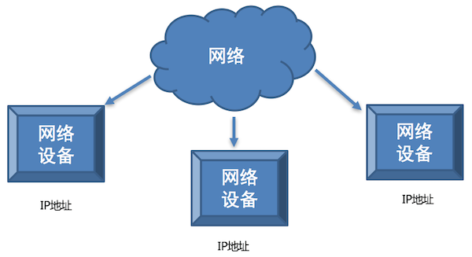
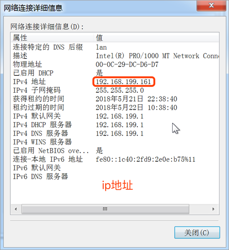
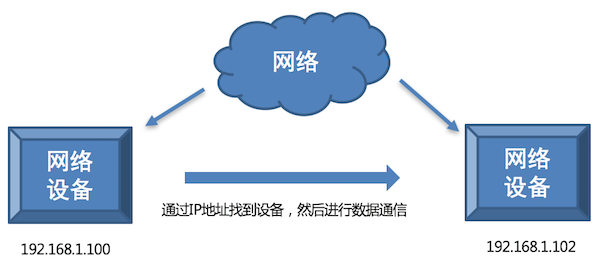
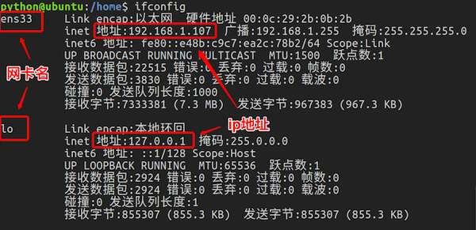
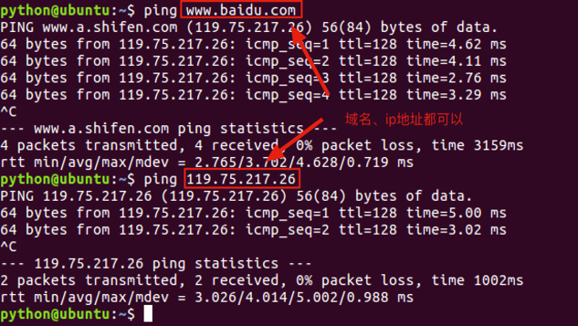

<!DOCTYPE lake>
<h2 data-lake-id="iJrin" id="iJrin"><span data-lake-id="u3fa8d23f" id="u3fa8d23f" style="color: rgba(0, 0, 0, 0.87)">网络编程</span></h2><p data-lake-id="u00bde078" id="u00bde078"><span class="lake-fontsize-12" data-lake-id="ua8f547c4" id="ua8f547c4" style="color: rgba(0, 0, 0, 0.87)">网络是将具有独立功能的多台计算机通过通信线路和通信设备连接起来，在网络管理软件及网络通信协议下，实现资源共享和信息传递的虚拟平台。</span></p><p data-lake-id="u667631fd" id="u667631fd"><span class="lake-fontsize-12" data-lake-id="u3a8e8c0e" id="u3a8e8c0e" style="color: rgba(0, 0, 0, 0.87)">能够编写基于网络通信的软件或程序，通常来说就是</span><strong><span class="lake-fontsize-12" data-lake-id="u5b3964cf" id="u5b3964cf" style="color: rgba(0, 0, 0, 0.87)">网络编程</span></strong><span class="lake-fontsize-12" data-lake-id="u3397c1b0" id="u3397c1b0" style="color: rgba(0, 0, 0, 0.87)">。</span></p><p data-lake-id="u82609bcb" id="u82609bcb"><span class="lake-fontsize-12" data-lake-id="u3b13b53f" id="u3b13b53f" style="color: rgba(0, 0, 0, 0.87)">连接通信设备需要知道设备的</span><strong><span class="lake-fontsize-12" data-lake-id="u21705303" id="u21705303" style="color: rgba(0, 0, 0, 0.87)">ip</span></strong><span class="lake-fontsize-12" data-lake-id="uac0fe4c4" id="uac0fe4c4" style="color: rgba(0, 0, 0, 0.87)">以及</span><strong><span class="lake-fontsize-12" data-lake-id="u140a8a69" id="u140a8a69" style="color: rgba(0, 0, 0, 0.87)">端口号</span></strong><span class="lake-fontsize-12" data-lake-id="u0e2f70d8" id="u0e2f70d8" style="color: rgba(0, 0, 0, 0.87)">.</span></p><h2 data-lake-id="O0MB3" data-lake-index-type="2" id="O0MB3"><span data-lake-id="uf7529862" id="uf7529862" style="color: rgba(0, 0, 0, 0.87)">IP 地址的概念</span></h2><p data-lake-id="u46834545" id="u46834545"><span class="lake-fontsize-12" data-lake-id="ud51525f2" id="ud51525f2" style="color: rgba(0, 0, 0, 0.87)">IP 地址就是</span><strong><span class="lake-fontsize-12" data-lake-id="u5273e21f" id="u5273e21f" style="color: rgba(0, 0, 0, 0.87)">标识网络中设备的一个地址</span></strong><span class="lake-fontsize-12" data-lake-id="u3b83f79f" id="u3b83f79f" style="color: rgba(0, 0, 0, 0.87)">，好比现实生活中的家庭地址。</span><strong><span class="lake-fontsize-12" data-lake-id="u9d62ae2d" id="u9d62ae2d" style="color: rgba(0, 0, 0, 0.87)">网络中的设备效果图:</span></strong></p><p data-lake-id="u8e0bcf3b" id="u8e0bcf3b"></p><h3 data-lake-id="hDnJR" data-lake-index-type="2" id="hDnJR"><span data-lake-id="u55b57d42" id="u55b57d42" style="color: rgba(0, 0, 0, 0.87)">IP 地址的表现形式</span></h3><p data-lake-id="ud2552dfc" id="ud2552dfc"></p><p data-lake-id="u1dccaacf" id="u1dccaacf"><strong><span class="lake-fontsize-12" data-lake-id="u3c0bac70" id="u3c0bac70" style="color: rgba(0, 0, 0, 0.87)">说明:</span></strong></p><ul list="u009e3783"><li data-lake-id="u98113b88" fid="u950f4185" id="u98113b88"><span class="lake-fontsize-12" data-lake-id="ue56914ab" id="ue56914ab" style="color: rgba(0, 0, 0, 0.87)">IP 地址分为两类：</span><span class="lake-fontsize-12" data-lake-id="u28a41580" id="u28a41580" style="color: rgba(0, 0, 0, 0.87)"> </span><strong><span class="lake-fontsize-12" data-lake-id="u4d1ae526" id="u4d1ae526" style="color: rgba(0, 0, 0, 0.87)">IPv4</span></strong><span class="lake-fontsize-12" data-lake-id="uff91a7ba" id="uff91a7ba" style="color: rgba(0, 0, 0, 0.87)"> </span><span class="lake-fontsize-12" data-lake-id="ued6f89f7" id="ued6f89f7" style="color: rgba(0, 0, 0, 0.87)">和</span><span class="lake-fontsize-12" data-lake-id="ud5ca92b6" id="ud5ca92b6" style="color: rgba(0, 0, 0, 0.87)"> </span><strong><span class="lake-fontsize-12" data-lake-id="u1eb71bb9" id="u1eb71bb9" style="color: rgba(0, 0, 0, 0.87)">IPv6</span></strong></li><li data-lake-id="ud3aa63b3" fid="u950f4185" id="ud3aa63b3"><span class="lake-fontsize-12" data-lake-id="u79919d9a" id="u79919d9a" style="color: rgba(0, 0, 0, 0.87)">IPv4 是目前使用的ip地址，IPv6 是正在广泛推广的ip地址</span></li><li data-lake-id="udf55162f" fid="u950f4185" id="udf55162f"><span class="lake-fontsize-12" data-lake-id="uc1e6cb0b" id="uc1e6cb0b" style="color: rgba(0, 0, 0, 0.87)">IPv4 是由点分十进制组成，IPv6 是由冒号十六进制组成</span></li></ul><h3 data-lake-id="bDatm" data-lake-index-type="2" id="bDatm"><span data-lake-id="uf5679dcc" id="uf5679dcc" style="color: rgba(0, 0, 0, 0.87)">IP 地址的作用</span></h3><p data-lake-id="u2e1031d6" id="u2e1031d6"><span class="lake-fontsize-12" data-lake-id="u16e69d7f" id="u16e69d7f" style="color: rgba(0, 0, 0, 0.87)">IP 地址的作用是</span><strong><span class="lake-fontsize-12" data-lake-id="u8a5a3931" id="u8a5a3931" style="color: rgba(0, 0, 0, 0.87)">标识网络中唯一的一台设备的</span></strong><span class="lake-fontsize-12" data-lake-id="u8149a1c8" id="u8149a1c8" style="color: rgba(0, 0, 0, 0.87)">，也就是说通过IP地址能够找到网络中某台设备。</span></p><p data-lake-id="u34421631" id="u34421631"><strong><span class="lake-fontsize-12" data-lake-id="ua543e122" id="ua543e122" style="color: rgba(0, 0, 0, 0.87)">IP地址作用效果图:</span></strong></p><p data-lake-id="u9ebde29b" id="u9ebde29b"></p><h2 data-lake-id="cDXRM" data-lake-index-type="2" id="cDXRM"><span data-lake-id="u2c8bb75e" id="u2c8bb75e" style="color: rgba(0, 0, 0, 0.87)">查看 IP 地址</span></h2><ul list="ubdd3a523"><li data-lake-id="ucaea4317" fid="ubb5c90c6" id="ucaea4317"><span class="lake-fontsize-12" data-lake-id="uc839e305" id="uc839e305" style="color: rgba(0, 0, 0, 0.87)">Linux 和 mac OS 使用</span><span class="lake-fontsize-12" data-lake-id="u8e4f656c" id="u8e4f656c" style="color: rgba(0, 0, 0, 0.87)"> </span><strong><span class="lake-fontsize-12" data-lake-id="u88c75a84" id="u88c75a84" style="color: rgba(0, 0, 0, 0.87)">ifconfig</span></strong><span class="lake-fontsize-12" data-lake-id="ueb634633" id="ueb634633" style="color: rgba(0, 0, 0, 0.87)"> </span><span class="lake-fontsize-12" data-lake-id="u1144fbec" id="u1144fbec" style="color: rgba(0, 0, 0, 0.87)">这个命令</span></li><li data-lake-id="u3c9aeee5" fid="ubb5c90c6" id="u3c9aeee5"><span class="lake-fontsize-12" data-lake-id="uda24140f" id="uda24140f" style="color: rgba(0, 0, 0, 0.87)">Windows 使用</span><span class="lake-fontsize-12" data-lake-id="ub90932dd" id="ub90932dd" style="color: rgba(0, 0, 0, 0.87)"> </span><strong><span class="lake-fontsize-12" data-lake-id="uba47a4b9" id="uba47a4b9" style="color: rgba(0, 0, 0, 0.87)">ipconfig</span></strong><span class="lake-fontsize-12" data-lake-id="u8905bc8c" id="u8905bc8c" style="color: rgba(0, 0, 0, 0.87)"> </span><span class="lake-fontsize-12" data-lake-id="uf8f6ebfc" id="uf8f6ebfc" style="color: rgba(0, 0, 0, 0.87)">这个命令</span></li></ul><p data-lake-id="uf261fb3a" id="uf261fb3a"><strong><span class="lake-fontsize-12" data-lake-id="uc5924ba3" id="uc5924ba3" style="color: rgba(0, 0, 0, 0.87)">说明:</span></strong></p><p data-lake-id="u9cee272a" id="u9cee272a"><strong><span class="lake-fontsize-12" data-lake-id="u0f162e31" id="u0f162e31" style="color: rgba(0, 0, 0, 0.87)">ifconfig</span></strong><span class="lake-fontsize-12" data-lake-id="u078b6ce6" id="u078b6ce6" style="color: rgba(0, 0, 0, 0.87)"> </span><span class="lake-fontsize-12" data-lake-id="u77d6d9b5" id="u77d6d9b5" style="color: rgba(0, 0, 0, 0.87)">和</span><span class="lake-fontsize-12" data-lake-id="u470acdc7" id="u470acdc7" style="color: rgba(0, 0, 0, 0.87)"> </span><strong><span class="lake-fontsize-12" data-lake-id="u4ed341f0" id="u4ed341f0" style="color: rgba(0, 0, 0, 0.87)">ipconfig</span></strong><span class="lake-fontsize-12" data-lake-id="u1128a3d8" id="u1128a3d8" style="color: rgba(0, 0, 0, 0.87)"> </span><span class="lake-fontsize-12" data-lake-id="u520f4a66" id="u520f4a66" style="color: rgba(0, 0, 0, 0.87)">都是查看网卡信息的，网卡信息中包括这个设备对应的IP地址</span></p><p data-lake-id="u14433306" id="u14433306"></p><p data-lake-id="u38493749" id="u38493749"><span class="lake-fontsize-12" data-lake-id="u77587209" id="u77587209" style="color: rgba(0, 0, 0, 0.87)">说明:</span></p><ul list="uac7abe24"><li data-lake-id="ub15808a9" fid="ua95ab3be" id="ub15808a9"><code data-lake-id="u024a9385" id="u024a9385"><span class="lake-fontsize-12" data-lake-id="ue2b9c087" id="ue2b9c087" style="color: rgba(0, 0, 0, 0.87)">192.168.1.107</span></code><span class="lake-fontsize-12" data-lake-id="u88aa3b36" id="u88aa3b36" style="color: rgba(0, 0, 0, 0.87)">是设备在网络中的IP地址 (局域网通常还有172.16.xxx.xxx)</span></li><li data-lake-id="uba825b65" fid="ua95ab3be" id="uba825b65"><code data-lake-id="u7c88914f" id="u7c88914f"><span class="lake-fontsize-12" data-lake-id="u36c6768b" id="u36c6768b" style="color: rgba(0, 0, 0, 0.87)">127.0.0.1</span></code><span class="lake-fontsize-12" data-lake-id="ucc51f8a3" id="ucc51f8a3" style="color: rgba(0, 0, 0, 0.87)">表示本机地址，提示：如果和自己的电脑通信就可以使用该地址。</span></li><li data-lake-id="ub081cc18" fid="ua95ab3be" id="ub081cc18"><code data-lake-id="u7b2c5c1f" id="u7b2c5c1f"><span class="lake-fontsize-12" data-lake-id="u2499d4a2" id="u2499d4a2" style="color: rgba(0, 0, 0, 0.87)">127.0.0.1</span></code><span class="lake-fontsize-12" data-lake-id="uabccb42c" id="uabccb42c" style="color: rgba(0, 0, 0, 0.87)">该地址对应的域名是</span><strong><span class="lake-fontsize-12" data-lake-id="uc6cae03f" id="uc6cae03f" style="color: rgba(0, 0, 0, 0.87)">localhost</span></strong></li><li data-lake-id="u501bd1a0" fid="ua95ab3be" id="u501bd1a0"><strong><span class="lake-fontsize-12" data-lake-id="u1023994e" id="u1023994e" style="color: rgba(0, 0, 0, 0.87)">域名是 ip 地址的别名</span></strong><span class="lake-fontsize-12" data-lake-id="u6de4e21a" id="u6de4e21a" style="color: rgba(0, 0, 0, 0.87)">，通过域名能解析出一个对应的ip地址。</span></li></ul><p data-lake-id="u11fb1044" id="u11fb1044"><span class="lake-fontsize-12" data-lake-id="u257e273d" id="u257e273d">​</span><br/></p><p data-lake-id="u74e31810" id="u74e31810"><strong><span class="lake-fontsize-12" data-lake-id="ua11c9211" id="ua11c9211" style="color: rgba(0, 0, 0, 0.87)">查看公网IP：</span></strong></p><p data-lake-id="u6f38acd4" id="u6f38acd4"><span class="lake-fontsize-12" data-lake-id="ua30e2315" id="ua30e2315" style="color: rgba(0, 0, 0, 0.87)">国内网络：</span><a data-lake-id="u94756f83" href="http://www.cip.cc/" id="u94756f83" rel="noopener noreferrer" target="_blank"><span class="lake-fontsize-12" data-lake-id="uf05839e0" id="uf05839e0" style="color: rgba(0, 0, 0, 0.87)">http://www.cip.cc/</span></a></p><p data-lake-id="u1e2bdfb7" id="u1e2bdfb7"><span class="lake-fontsize-12" data-lake-id="u88d0caac" id="u88d0caac" style="color: rgba(0, 0, 0, 0.87)">国外网络：</span><a data-lake-id="u52eb3758" href="https://www.ipaddress.com/" id="u52eb3758" rel="noopener noreferrer" target="_blank"><span class="lake-fontsize-12" data-lake-id="u020f0a7b" id="u020f0a7b" style="color: rgba(0, 0, 0, 0.87)">https://www.ipaddress.com/</span></a></p><h2 data-lake-id="nTsJV" data-lake-index-type="2" id="nTsJV"><span data-lake-id="ubbc41946" id="ubbc41946" style="color: rgba(0, 0, 0, 0.87)">检查网络是否正常</span></h2><ul list="uae7f91f7"><li data-lake-id="u19bc8ade" fid="udb96ed64" id="u19bc8ade"><span class="lake-fontsize-12" data-lake-id="u6447b238" id="u6447b238" style="color: rgba(0, 0, 0, 0.87)">检查网络是否正常使用 </span><code data-lake-id="u59964748" id="u59964748"><span class="lake-fontsize-12" data-lake-id="ua07f4d9c" id="ua07f4d9c" style="color: rgba(0, 0, 0, 0.87)">ping</span></code><span class="lake-fontsize-12" data-lake-id="u2c817ff4" id="u2c817ff4" style="color: rgba(0, 0, 0, 0.87)"> 命令</span></li></ul><p data-lake-id="u4c7c778e" id="u4c7c778e"><strong><span class="lake-fontsize-12" data-lake-id="u1ac3d4fe" id="u1ac3d4fe" style="color: rgba(0, 0, 0, 0.87)">检查网络是否正常效果图</span></strong></p><p data-lake-id="u2624c755" id="u2624c755"></p><p data-lake-id="uc44675a6" id="uc44675a6"><strong><span class="lake-fontsize-12" data-lake-id="ucbb62002" id="ucbb62002" style="color: rgba(0, 0, 0, 0.87)">说明:</span></strong></p><ul list="ubefd4c18"><li data-lake-id="u1e408848" fid="ub57c3e16" id="u1e408848"><code data-lake-id="u6481f2c9" id="u6481f2c9"><span class="lake-fontsize-12" data-lake-id="uef5d52ff" id="uef5d52ff" style="color: rgba(0, 0, 0, 0.87)">ping </span><span class="lake-fontsize-12" data-lake-id="u1f89c88c" id="u1f89c88c">www.baidu.com</span></code><span class="lake-fontsize-12" data-lake-id="ubfae51ac" id="ubfae51ac" style="color: rgba(0, 0, 0, 0.87)"> 检查是否能上公网</span></li><li data-lake-id="u04f9e704" fid="ub57c3e16" id="u04f9e704"><code data-lake-id="u53f8c4dd" id="u53f8c4dd"><span class="lake-fontsize-12" data-lake-id="u99d3e3c0" id="u99d3e3c0" style="color: rgba(0, 0, 0, 0.87)">ping</span></code><span class="lake-fontsize-12" data-lake-id="ucc83a6bf" id="ucc83a6bf" style="color: rgba(0, 0, 0, 0.87)"> 当前局域网的ip地址 检查是否在同一个局域网内</span></li><li data-lake-id="ud3714dcd" fid="ub57c3e16" id="ud3714dcd"><code data-lake-id="u207d9830" id="u207d9830"><span class="lake-fontsize-12" data-lake-id="u9be6aec2" id="u9be6aec2" style="color: rgba(0, 0, 0, 0.87)">ping 127.0.0.1</span></code><span class="lake-fontsize-12" data-lake-id="uebf8908f" id="uebf8908f" style="color: rgba(0, 0, 0, 0.87)"> 检查本地网卡是否正常</span></li></ul><h2 data-lake-id="am9lz" data-lake-index-type="2" id="am9lz"><span data-lake-id="ub8ec2d84" id="ub8ec2d84" style="color: rgba(0, 0, 0, 0.87)">小结</span></h2><ul list="ue926abe8"><li data-lake-id="u809ea9bb" fid="ufec65b02" id="u809ea9bb"><span class="lake-fontsize-12" data-lake-id="u443111cc" id="u443111cc" style="color: rgba(0, 0, 0, 0.87)">IP 地址的作用是标识网络中唯一的一台设备的</span></li><li data-lake-id="u0cbdb5be" fid="ufec65b02" id="u0cbdb5be"><span class="lake-fontsize-12" data-lake-id="u98eb5896" id="u98eb5896" style="color: rgba(0, 0, 0, 0.87)">IP 地址的表现形式分为: IPv4 和 IPv6</span></li><li data-lake-id="u4ae51cde" fid="ufec65b02" id="u4ae51cde"><span class="lake-fontsize-12" data-lake-id="ucdeb94c0" id="ucdeb94c0" style="color: rgba(0, 0, 0, 0.87)">查看网卡信息：ifconfig (Linux, Mac)  ipconfig (Windows)</span></li><li data-lake-id="u45bba55b" fid="ufec65b02" id="u45bba55b"><span class="lake-fontsize-12" data-lake-id="u59b3c0bc" id="u59b3c0bc" style="color: rgba(0, 0, 0, 0.87)">检查网络： ping</span></li></ul><h2 data-lake-id="d8TEx" data-lake-index-type="2" id="d8TEx"><span data-lake-id="u4bd65d62" id="u4bd65d62" style="color: rgba(0, 0, 0, 0.87)">小技巧</span></h2><p data-lake-id="u21e5da8d" id="u21e5da8d"><span class="lake-fontsize-12" data-lake-id="uc7caecb6" id="uc7caecb6">可以使用Python自带的http.server模块创建文件服务器</span></p><span class="yuque-card-unsupported">[codeblock]</span>